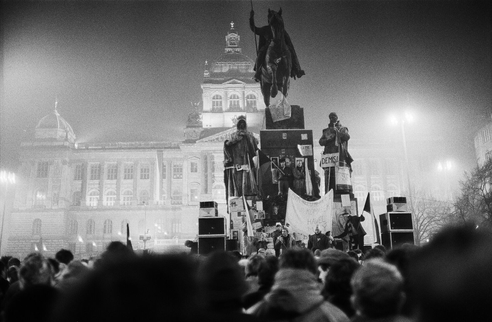
17. listopad.
Dvakrát stejné datum.
Dvě generace studentů.
Země pod okupací.
Německo obsadilo zbytek Československa. Vznikl Protektorát Čechy a Morava. V březnu 1939 se u nás začalo jezdit vpravo.
Demonstrace.
Výročí vzniku Československa. Při zásahu padly výstřely.
Václav Sedláček
dělník · zemřel na místě
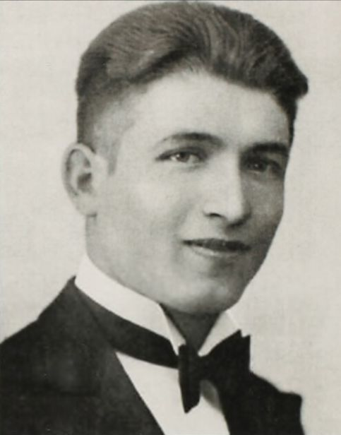
Jan Opletal
student medicíny · zemřel 11. 11. 1939 ve věku 24 let
Foto: kolem 1934, autor neznámý, volné dílo (Wikimedia Commons)Proč si pamatujeme hlavně studenta?
Školy se zavřely.
Pohřeb Jana Opletala (15. 11.) se změnil v protest. V noci na 17. 11. obsadili koleje v Praze, Brně a Příbrami.
funkcionářů popraveno bez soudu
studentů odvezeno do Sachsenhausenu
VŠ zavřeny, fakticky do konce války
Zatčeno více než tisíc až dva tisíce studentů, zahynulo jich 20 až 35 (zdroje se liší). Mluvíme věcně, bez podrobností.
Jak se rozhodnout?
Je listopad 1939. Shromáždění může být nebezpečné. Nehledáme správnou odpověď, nikdo nemusí mluvit o sobě.
Spolužáci jdou.
Je to nebezpečné. Jdeš?
Co zvažuješ?
Strach, rodina, hodnoty, následky.
Odvaha, nebo rozum?
Může být odpovědné i nejít?
Londýn.
České školy byly zavřené, ale studenti na ně nezapomněli. V Londýně, kde působila Mezinárodní studentská rada, vyhlásili 17. listopad Mezinárodním dnem studentstva – na památku 1939. Přesné datum (16. nebo 17. 11.) se ve zdrojích liší.
Zdroje: cs.wikipedia.org, en.wikipedia.org (International Students' Day)
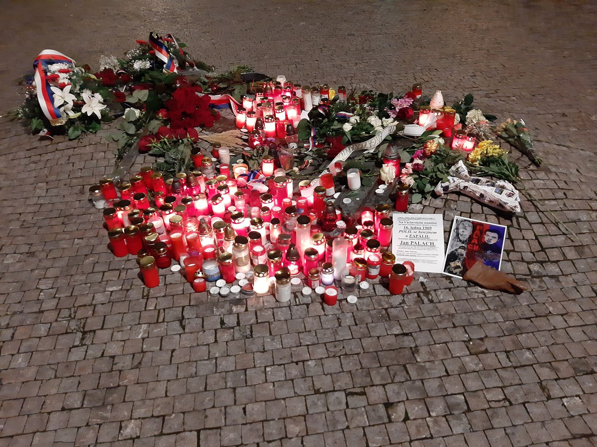
Jan Palach.
16. 1. 1969 zvolil krajní protest proti rezignaci společnosti po okupaci 1968. Zemřel 19. 1. Pohřeb 25. 1.: desítky tisíc lidí (odhady se liší).
Není to vzor k následování. Existují bezpečné způsoby, jak se ozvat.
Písně, které vadily.
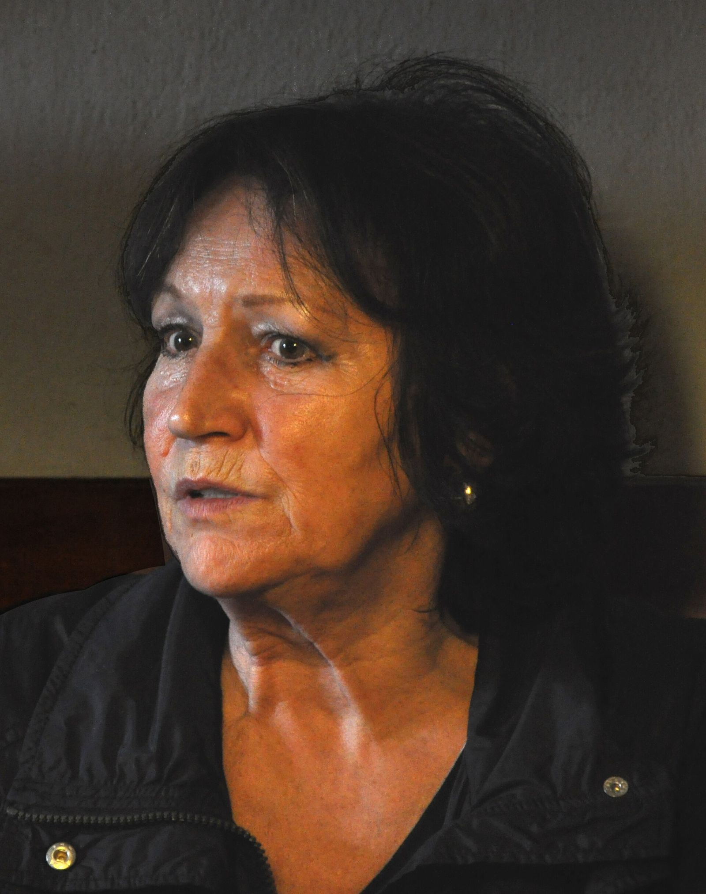
Marta Kubišová
Modlitba pro Martu (1968)
1970 zákaz vystupování. 21. 11. 1989 zpívá z balkonu.
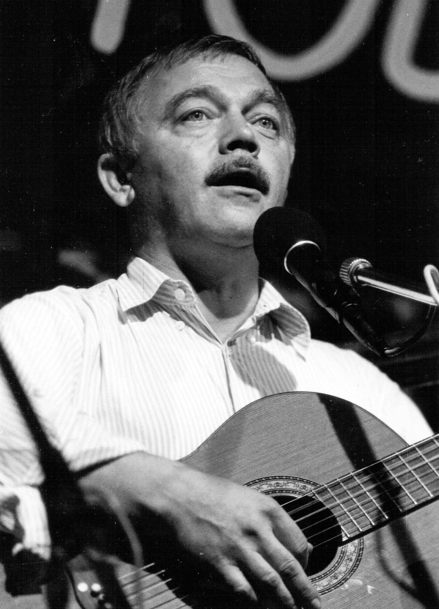
Karel Kryl
Bratříčku, zavírej vrátka (1969)
Píseň zakázána v březnu 1969. V září odjel do NSR na 20 let.
Albertov. Národní třída.
účastníků (podle odhadů)
zraněných (568 a 592 podle dvou komisí)
Povolená trasa končila na Vyšehradě, dav šel na Národní. Zdroje: cs.wikipedia.org, Radio Prague Int., specialynovinky.cz.
Fáma o Šmídovi.
Po zásahu se šířila zpráva, že zemřel student Martin Šmíd. Byla nepravdivá: 19. 11. se potvrdilo, že žije.
Jak ověřit takovou zprávu?
Fámu podle některých zdrojů vymyslela Drahomíra Dražská; zda ji někdo využil, se zdroje rozcházejí.
Za týden jiná země.
- 19. 11.Vzniká Občanské fórum
- 20. 11.Stávky škol, demonstrace na Václavském náměstí
- 21. 11.Havel z balkonu, zpívá Kubišová
- 24. 11.Rezignuje vedení KSČ
- 27. 11.Generální stávka (12–14 h)
- 29. 12.Havel zvolen prezidentem
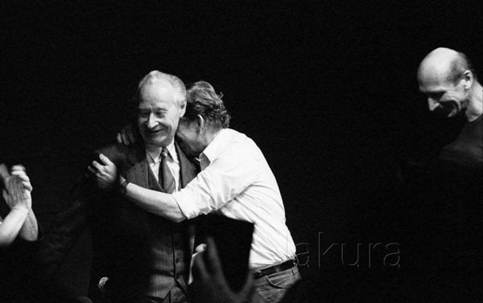
Havel a Dubček v Laterně magice, 24. 11. 1989. Foto: Jaroslav Kučera, CC BY-SA 3.0 (Wikimedia Commons), výřez bez úprav obsahuRevoluci říkáme „sametová“ – po 17. 11. proběhla s minimem násilí.
Proč asi?
Symboly 17. listopadu.
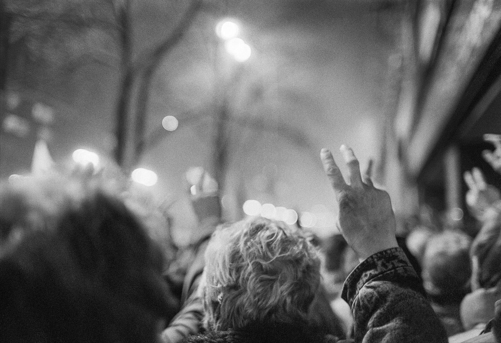
Znak V
Dva zdvižené prsty – znak svobody. Lidé je zvedali na demonstracích v listopadu 1989.
Foto: RobbieIanMorrison, CC BY 4.0 (Wikimedia Commons), 1989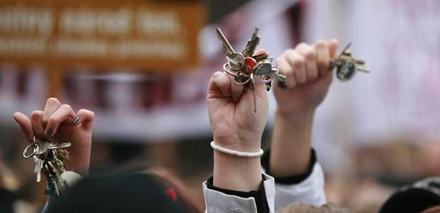
Zvonění klíči
„Odzvonění“ režimu: zvuk klíčů jako „poslední zvonění“ komunistické vládě. Odemykání budoucnosti: „odemčení“ svobody, demokracie a hranic do svobodného světa.
Foto: dodáno školou; připomínka cinkání klíči (nedobový snímek)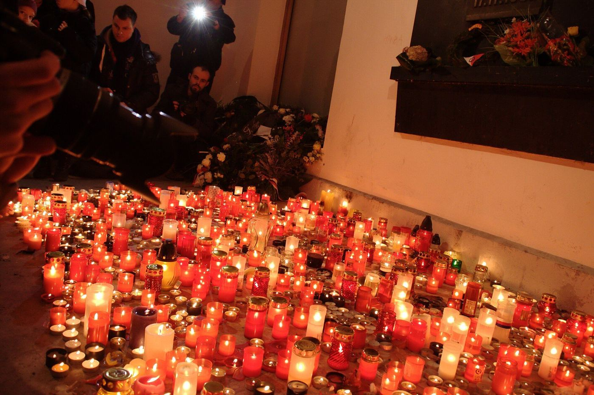
Svíčky a květiny
U pamětní desky na Národní třídě lidé zapalují svíčky a pokládají květiny.
Svíčky u pamětní desky na Národní třídě, snímek z roku 2012. Foto: Aktron, CC BY 3.0 / BY-SA 3.0 (Wikimedia Commons)Smajlík a píseň.
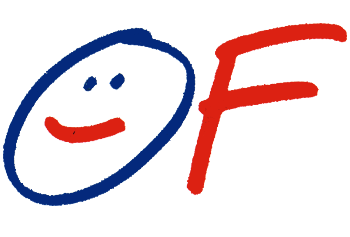
Logo Občanského fóra
Veselý smajlík. Navrhl ho student Pavel Šťastný.
Logo OF: P. Šťastný, volné dílo (Wikimedia Commons)Modlitba pro Martu
Zpívá Marta Kubišová. Z balkonu na Václavském náměstí zazněla 21. 11. 1989.
Klikni na událost.
1939 vs. 1989
1939
- Mocnacistická okupace
- Spouštěčpohřeb J. Opletala, smrtelně postřeleného 28. 10.
- MístoPraha, Brno, Příbram
- Reakcetisíce zatčených, 9 popravených, Sachsenhausen
- DůsledekVŠ zavřeny (fakticky do 1945)
- DnesMezinárodní den studentstva
1989
- Mocvláda jedné strany (KSČ)
- Spouštěčstudentský pochod k výročí 1939
- MístoAlbertov → Vyšehrad → Národní
- Reakcezásah, přes 500 zraněných
- Důsledekstávky, OF, za týden rezignace vedení KSČ
- DnesDen boje za svobodu a demokracii
Společné: mladí lidé, odvaha, touha po svobodě – ale i riziko a cena, kterou někdo zaplatil.
Čísla jsou přibližná, zdroje se liší. Zdroje viz předchozí slidy.
Teď to zažijeme venku.
20 schránek, jeden tým, jedno poselství. Provedou vás čtyři hodnoty a symboly, které už znáte.
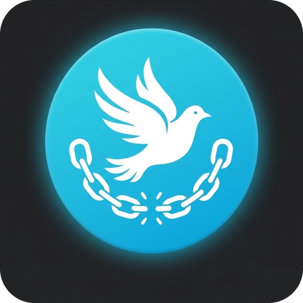
Svoboda
Odvaha
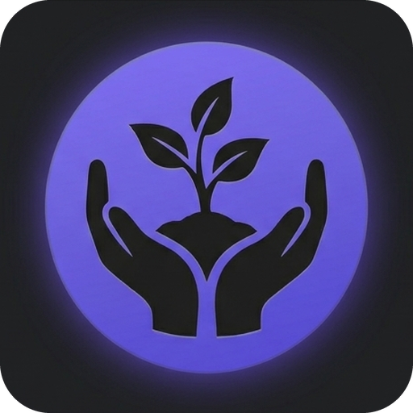
Odpovědnost
Tolerance
Připravila ZŠ Vančurova Hodonín